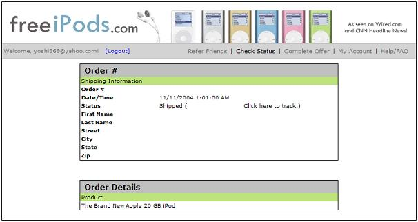
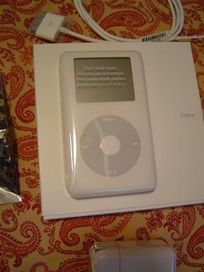

I finally did it. Last week, I abused my option to call out of my Dial America shifts. I just couldn't take it anymore, I needed a break, I felt very sick, and I called out. Wednesday, it was class related. This weekend, I woke up just not wanting to subject myself to 7 hours of hell. It is just too much for me right now, and I'll have to make it up later, take some flak for it, or just get fired, I don't care. I'm not in super-serious debt or anything. In fact, the oddest thing happened. My strides on my credit card have resulted in a $1,000 increase in my credit line. I just don't know what to do about that. Certainly won't be spending any more money, God help me.
I downloaded the final episode of Inuyasha on Saturday. My reaction is that it really is pretty poor considering the final farewells of some other beloved series. I mean, Buffy really summed alot of themes up, but I think Inuyasha really gets bogged down in plot, you really don't get a grasp of the finer things, unless you're really looking for them. It was a touching and horrifying final scene, though. I don't see myself jumping into the belly of a giant stone ogre with out at least thinking, "Hey, this isn't a really cunning trap set by Naraku, is it?" Yah, but things worked out.
I enjoy not thinking about the election anymore and focusing on some other more important things...
|
Current Mood |
|
Detached |
|
Current Music |
|
Hitomi Yaida - I Am |
By the way, incase you people didn't know (not that it really matters to me), it was my birthday yesterday. I've been very preoccupied, however, I didn't want to make a big deal about it. I figured if it was of importance to anyone, and if they wanted to recognize it, it would be up to them. Unlike last year, I didn't go out of my way to gather the masses in recognition of me, because honestly, I feel better just having people do that for me. No encouragement from me, sorry, but my friends did go to dinner with me last night, thanks to Matt. It was nice. Steak is great, mashed potatoes, and other stuff.
Jerm got me America: The Book from The Daily Show. I see myself flocking to The Daily Show in the next four years, in this post-election world. I mean, eight years of George W. Bush?! You can't be serious, literally, you have to make fun of it. It's the only way anyone is going to survive. Marilia got me Chris Rock's Bigger and Blacker and his most recent comedy show. I haven't enjoyed the Rock since I lost the CD years ago at McEachern. I watched it last night, to much delight, and with cake from Gen and Missy. I think people are surprised to see me interested in alot of the things Chris Rock says, I just think it's hilarious. His quip about fat Black women and what they've got "under the gut" just has me rolling evertime. Also: "Hey Dad, thanks for knocking out this month's rent!"
Well, in other news, it has finally come to pass:
My order has shipped! Best of all, according to the FedEx tracking page, it's arriving tomorrow! I don't think I'm going to construct an freeiPods.com guide page or anything, but I'm certainly going to put pictures up, and I might go to some of the message boards that brutally rebuffed me for posting my referral link there. I felt really guilty for doing it, but I was really sincere and just matter-of-fact about the offer, and people really didn't have to do it if they didn't want to. I mean, isn't that what message boards are for? Messages?! I mean, commercial messages suck, sure, but I got a $250 free item because of it, and all I had to do was inconvenience my friends and family and sign up for AOL and handily cancel it. What's wrong with that??

And that's just to be redundent. I must say, as the whole experience draws to a happy close, I feel as if I'm missing a little piece of my soul because of this whole thing. I don't think I'll do something like this again. I think the reason I did it in the first place was because there was a moment early this year, I was on a bus. I was thinking about an iPod, and I thought it would be a really wonderful way to backup my music, and it would be really nifty to have around campus. I like CDs and everything, but what can you put on a CD but maybe 18 or 19 songs at the most? I'm always randomizing my Winamp on my computer, and having a portable Winamp was pretty enticing...
HOWEVER, in a moment of zen, I realized the price was too high and it was ultimately not worth it. I still stand by that, and I think that's why a legitimate free iPod was so inviting. I wasn't willing to shoal out hundereds of dollars for the hardware, but equipted with my Trilegiant knowledge on how offers like this sort work, I was unusually eager, willing, and able to take on such a venture. It ended well, but I feel guilty for committing (even though there was 'no risk') to something I knew I was going to cancel. It just feels icky, and it was wrong.
Anyways, it's all but done now. Expect pictures Friday!
|
Current Mood |
|
Uneasy |
|
Current Music |
|
Elton John - Funeral for a Friend |
 What could arguably be the semester with no Brandy face (except for maybe one or two that I think I had toward the beginning), I have proven myself wrong and had a good materialistic day. I have triumphed over the non-believers! I have my FREE IPOD!!! And it sounds very sweet :-D
What could arguably be the semester with no Brandy face (except for maybe one or two that I think I had toward the beginning), I have proven myself wrong and had a good materialistic day. I have triumphed over the non-believers! I have my FREE IPOD!!! And it sounds very sweet :-D
FedEx rocks the socks off of UPS, because I wasn't home, and they still left the box outside my door so I wouldn't have to wait days and days before I got to sign for the package. I know, I know, it's dangerous leaving $250 worth of FREENESS outside my door, but have you been to my house before? We have good neighbors. They know I screwed over myself and my friends for this, and they won't deny me the satisfaction 8-) So I skipped editing so I could enjoy the iPod goodness (and now that I think about it, I have stuff to do that I am certainly neglecting). I've got all my songs aboard, and am at a loss of what to do now.
No more "check the status of your order" at FreeiPods.com. No more "Sent to Vendor, Waiting for Product." No more bugging my sister, mother, and friends to sign up for the free Blockbuster offer and cancel it the next day. It's all over, and I've got my iPod. I hope everyone's jealous, because I earned it, and YOU probably put down good money for your piece of Apple goodness, but I got mine for free, and now I'm better :-D
Want proof?! There's some proof! I found this nifty lil' box by Milo's ugly ass chair that's sitting on my front porch (where the bastard left it). I really am documenting this whole journey because I really want to post a link to this on the Adult Swim message board, because I was brutally rebuffed for posting my referral link there. I mean, they thought I was scamming those people!? I mean, if they didn't want to sign up for the thing, they didn't have to. I mean, what's the problem just clueing people into something?! It's not like Trilegiant when I have to ask the people 3 or 4 times before I accept NO for an answer. If they didn't want to read my thread, they didn't have to...grrr! Maybe I'm just bitter, but I don't like feeling bad about things I shouldn't feel bad about. I did nothing wrong.

Here's the wonderful goodness in all it's wonder. It has pretty decent volume, so much better than my laptop audio. I wish I could play the thing in my car. I may fashion a way to do that, eventually. There's some FM transmitter thing you can get for the iPod, but I don't know if I want to go that far. I may just have to buy the special BMW that allows for the iPod to be inserted seemlessly into the dash. That would be so awesome!
Anyways, after class, I'm going iPod accessory shopping. Then my sister and Tyler are coming to take me out to dinner for my birthday, and we might go see The Incredibles, if they are willing. LATER BITCHES!!!
|
Current IPOD Music |
|
Do As Infinity - Shinjitsu no Shi |